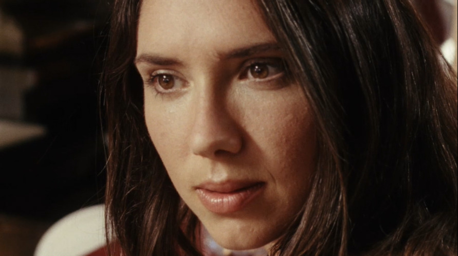
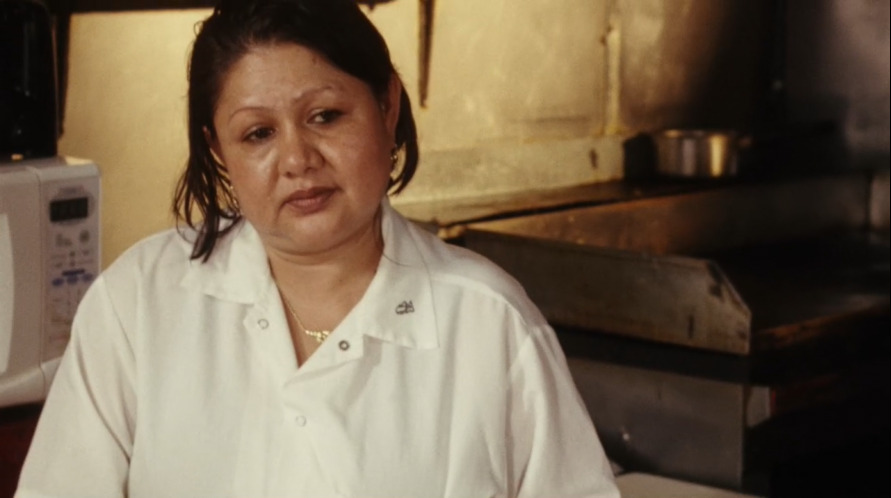

Prompted by a conversation with a friend, I’d like to keep better notes on what I find interesting in comedy. As humorlessly as possible, of course.
I don’t think it’s especially controversial for me to say that I like comedy but I don’t really like comedians. They do make me laugh sometimes, but I don’t really like them. Or, rather, there are limits to how much I can like them.
The comedian often adopts the position of the complainer self-deprecatingly but not melancholically. The comedian-complainer doesn’t mock himself because he has internalized the negative traits of the other; rather, for him, self-deprecation is a means for maintaining a sense of control over the narrative. He is “in on” his own shortcomings; his self-deprecation is a means of signalling self-knowledge. This is sexed, of course. The self-deprecation of the male comedian is often a disavowal disguised as an avowal: he advertises – even flaunts – his own castration in order to sustain the fantasy that he remains ahead of it. By transforming his own shortcomings into “material,” he asserts that he is “in on” all the ways in which he isn’t.
Listen Up Philip is about a writer, not a comedian, but he is insufferable and narcissistic in way that resembles one. He is a clown. The film begins with the titular character (played by Jason Schwartzman) walking to a diner to meet with an ex-girlfriend. Philip is already angry: “characteristically not in a hurry,” the narrator observes as Philip walks to the diner, he is nonetheless “perpetually enraged by slow foot traffic before him.” Mona is, of course, late to their meeting, which means that when she arrives she finds him “in a state of rage and on the verge of storming out.” She asks about his new book. “I wasn’t sure you’d noticed, or heard,” he responds. He lists the itinerary for his upcoming book tour, adding that he’s been “told to expect big things” on the West Coast. “You sound like you’re bragging,” she says. He then begins to monologue about how she had never believed in him.
“That’s because I am bragging. And you’re doing a really hurtful job of sounding unfazed. And do you know why that is? Because you’re not pretending.”
Mona says about sixty-five words in the minute-and-forty-five-second scene.1 Most of her speech takes the form of her cautiously exasperated facial expressions, which punctuate Philip’s berating.
Like a comedian, Philip, a writer, loves to hear himself talk. He also, infuriatingly, avows all of his own flaws: his narcissism, his coldness, his disregard for the feelings of others. His avowal of all the ways in which he is awful does not occasion the working-through of his own symptoms. Instead, his piggish narcissism provides him with an endless source of content: “Philip had never been one for speaking his mind,” the film’s narrator observes, “preferring instead to bottle up his emotions, eventually forgetting or utilizing them for creative inspiration.”
Listen Up Philip is not a film a stand-up comedian could have made. On letterboxd I read a lot of comparisons between this film and those of Woody Allen. I am not convinced that Allen – a comedian – is capable of making a film so hateful of its own subject. It’s even in the title. That imperative: listen up. The film is speaking down – not to you, but to Philip. You are “in on” its mode of address – so long as you aren’t Philip, anyway.
Its comedy, then, lies in letting the audience in on all the ways Philip fails to remain in control of his own narrative because the people around him (primarily women) have all reached a point where they are no longer able to indulge his fantasies. They call him on his bluffs. Maybe this is one function of comedy: to deflate fantasies, to refuse to play along. If Listen Up Philip is particularly condescending to its titular character, perhaps it’s because Philip never gets to experience the deflation of his own fantasies as a relief. The film is about him, but nothing about it is for him. I suppose that’s what people call “cringe comedy.”
I like how this film deals with sexual difference because the women in the film – Mona, Philip’s current girlfriend Ashley (played by Elizabeth Moss), Ike Zimmerman’s daughter Melanie (Krysten Ritter) – are introduced to at points in which their relationships with the film’s men are irreparably breaking down. At the same time, though, these women don’t simply serve to provide occasions for the men being insufferable pigs. When they exit the picture, their absence is felt, even if the men seem to be constitutionally unable to acknowledge that absence. Once he has destroyed his last remaining relationship, despite continuing to have success as a writer, Philip’s ego remains its own primary source of content. He spends the rest of his life “an isolated and emotionless specter, forever remaining a mystery, even to himself.” lol.
I think what’s also really smart about this film, though, is that it attends to the double-edged nature of this dynamic. If women aren’t simply objects who occasion scenes whose function is to illustrate something of a man’s character, neither is the inverse true. When the film shifts its perspective to that of Ashley, even if Philip’s absence provides the opportunity for newfound freedoms – like adopting a cat, or throwing a party, or getting a drink with a stranger – each of these various gestures feels like an attempt to fill an absence. This absence, however, precedes Philip. Even if in this film the women characters are more sympathetic, its gaze retains some distance from them: it doesn’t ask us to identify with these women because to do so would be to undermine a basic point the film wants to make about the inescapable loneliness of all of its characters.
When, at the beginning of the film, Philip smirks as he dons his messenger bag and walks out the door, the camera starts to follow him, but then retraces its steps back to Mona. There’s a cut to her, wide-eyed. When I was jotting down my thoughts on the film after my first viewing, I’d misremembered this part of the scene, recalling, perhaps wishfully, that at this point Mona and the waitress behind the bar at the diner exchange a glance.
I think I remembered it this way because there’s a commonplace in scenes like this. It goes something like this. A woman is subjected to a man (or men) being, well, annoying. Maybe he’s talking over her, or yelling at her, or explaining something to her she doesn’t need explained. Then another woman – a stranger – will make a kind of merciful and knowing eye contact with her.2 There is an exchange of looks, a reassuring and solidaristic moment of identification between two women.
In fact, though, the film denies us the satisfaction of such an exchange. Mona’s eyes appear glazed, as if she is still processing the interaction she’s just had with Philip. Her gaze lingers in his direction for only an instant, before quickly turning away, fixed on no object. Without cutting, the camera moves once more, this time to bring the diner’s waitress into view. She looks at Mona inexpressively, indifferent to the scene which has just unfolded. She's just waiting, I suppose, for Mona to decide on what she wants to order.


“How are you?”
“Can you pay attention please?”
“Can we stop talking about it? I’m here now.”
“Maybe a grilled cheese for me.”
“Yeah things are good with me.”
“Allie and I just finally found a new roommate.”
“She got married like two years ago.”
“Is that the new book?”
“Okay.”
“You sound like you’re bragging.”
“Why would you say that?”
“Well good for you.”↩︎
There’s a good example of this kind of exchange in India Donaldson’s recent film Good One, a wonderful and sly film about a teenage girl named Sam (Lily Collias) going on a camping trip in the Catskills with her father and his best friend. The trio stops in a grocery store towards the beginning of the film and when the two men start gently bickering with each other about their choices in snacks the clerk shoots Sam a knowing smile.↩︎